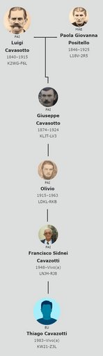
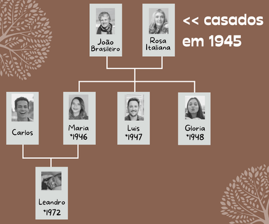

Cidadania Italiana

Atualmente a cidadania italiana é regulada pela Lei n. 91 de 05.12.1992. As duas formas mais comuns que brasileiros podem ter a cidadania italiana reconhecida/adquirida são:
- Por descendência
- Por casamento
A cidadania por casamento pode ser solicitada por cônjuges de cidadãos italianos. A cidadania por descendência (ou Jure sanguinis) é passada dos pais para seus filhos “através de sangue” e SEM LIMITE DE GERAÇÃO. É importante ressaltar aqui que filhos adotivos também tem direito a esse tipo de reconhecimento de cidadania. Portanto, para conseguir o reconhecimento de sua cidadania por descendência é necessário comprovar com certidões de registro civil a linha direta de descendência entre você e o ancestral italiano.
Veja por exemplo o caso do meu marido (Thiago). O bisavô dele (Giuseppe) imigrou, com seus pais, para o sul do Brasil em 1877. Apesar de ter apenas 3 anos de idade quando chegou ao Brasil, ele é o primeiro antepassado italiano na linhagem de meu marido com a cidadania italiana reconhecida e com uma certidão de nascimento italiana (veja o esquema na imagem). Por isso ao solicitar o reconhecimento de sua cidadania italiana no Consulado italiano de Curitiba, meu marido teve que apresentar todas as certidões de nascimento, casamento e óbito ligando-o até seu bisavô (Giuseppe).

Cidadania Italiana Por Via Materna
Ouviu dizer que mulheres não podem reconhecer a cidadania italiana? Ou que se seu antepassado italiano ou filhos deles eram mulheres você não tem direito à cidadania italiana? Saiba que você pode reconhecer sua cidadania sim! Apesar de realmente existir alguns “poréns”.
A Legislação Italiana previa que a mulher italiana que se casava com um cidadão estrangeiro perdia a cidadania italiana e assumia a cidadania do marido. Desta forma ela não poderia transmitir o sangue italiano aos seus filhos nascidos até 01/01/1948.
Sendo assim, todos os filhos nascidos após 1948 podem solicitar a cidadania italiana no consulado sem qualquer restrição especificada na lei da nacionalidade italiana. Já os que nasceram antes disso não conseguem o reconhecimento da cidadania no consulado (que é chamado de via administrativa) porque não se encaixam nos requisitos da lei de cidadania italiana. Se esse é seu caso, não perca esperança, ainda existe uma alternativa para solicitar sua cidadania. A sua cidadania deverá ser requerida através de via judicial.
Cidadania Italiana Jure sanguinis Via Judicial Materna
Fazendo sua genealogia você descobre que tem uma antepassada italiana em sua linhagem e que ela se casou com um estrangeiro (não italiano). Para saber se você poderá solicitar sua cidadania via administrativa (no consulado italiano por você mesmo) ou via judicial (no Tribunal de Roma, por meio de um advogado que seja habilitado para atuar profissionalmente no país).
Observe o ano em que sua antepassada se casou e quando seu o filho ou filha nasceu. Se ela se casou antes de 01/01/1948 e seus filho ou filha nasceu até 01/01/1948 não tem o sangue italiano conforme a lei indica. Para facilitar veja o exemplo:
João, brasileiro, e Rosa, italiana, se casaram em 1945. Eles tiveram 3 filhos. Seus filhos: Maria (nascida em 1946) e Luis (nascido em 1947) não receberam a cidadania por sangue conforme a lei, porque ao se casar com o João a Rosa deixou de ser italiana e passou a ser brasileira. Nem eles, nem os filhos deles poderão requerer a cidadania via administrativa (no consulado).
Já a filha Gloria (nascida em 1948), após a mudança da lei italiana, recebe o “sangue italiano” da mãe e pode requerer a cidadania italiana no consulado assim como posteriormente os filhos, netos, bisnetos... dela.
Em conclusão, se você se encaixa nessa categoria (como no caso da Maria e do Luis) e quiser ter sua cidadania reconhecida, precisa entrar em contato com um advogado que seja habilitado para atuar na italiana e ele entrará com o processo judicial no Tribunal de Roma pedindo o reconhecimento da cidadania para você.
Cidadania Italiana Jure sanguinis Via Administrativa
Você analisou o seu e viu que não é judicial? Então siga o passo a passo a seguir para ter sua cidadania reconhecida sem gastar com terceiros para fazer isso por você. É simples e você consegue!**
Passo 01
Os Documentos
Peça nos respectivos cartórios todos os documentos civis que ligam você até seu antepassado italiano. Todas as certidões de nascimento, casamento, óbito e divórcio (quando houver). Essas certidões devem ser solicitadas ao cartório em formato INTEIRO TEOR. O formato simples não é aceito pelo consulado.
Com as certidões em mãos compare as informações de uma certidão com as informações que estão em outra certidão. Por exemplo, os nomes estão com a mesma grafia? As datas são as mesmas? Se tiver algo diferente você deve pedir a correção dos documentos (a ajuda de um advogado vai ser necessária na maioria dos casos). Depois de corrigidas, as certidões precisam ser solicitadas novamente para que você leve ao consulado as certidões com as informações corretas.
O consulado aceita alguns abrasileiramentos dos nomes. No caso do meu marido o antepassado dele se chamava Guiseppe Cavasotto, mas em seus documentos no Brasil seu nome era José Cavazotto e até mesmo Cavasotti. Não fizemos nenhuma mudança porque o consulado em Curitiba aceita essas alterações.
As certidões italianas, claro, você deve pedir ao comune (cidade) onde o evento aconteceu. Você pode solicitar através do e-mail. É só fazer uma pesquisa no google sobre o setor “Ufficio Anagrafe” ou “Ufficio Servizi demografici” da cidade na qual precisa das certidões.
Passo 02
A Certidão Negativa de Naturalização
O Certidão Negativa de Naturalização (C.N.N.) serve para informar que não conta registro de naturalização em nome da pessoa pesquisada junto ao Departamento de Migrações do Ministério da Justiça brasileiro.
Solicite a CNN online e gratuitamente no site da Secretaria Nacional de Justiça clicando aqui. O site vai gerar um pdf, salve esse pdf e depois imprima-o.
Passo 03
O Apostilamento
A Apostila é um certificado de autenticidade emitido por países signatários da Convenção da Haia, promulgada no Brasil pelo Decreto 8.660/2016.
Apostile as certidões brasileiras e a CNN que você imprimiu. Para fazer o apostilamento leve as certidões e a CNN a um cartório de registro civil.
Passo 04
A Tradução
Entre em contato com um tradutor juramentado e faça traduções apenas das suas certidões (de seus filhos menores e outros familiares que estejam requerendo a cidadania junto com você). É claro que o idioma de tradução dessas certidões deverá ser o italiano.
Passo 05
O Apostilamento (Novamente)
Depois de receber as traduções juramentadas feitas pelo tradutor juramentado de sua escolha, você deve apostilar essas traduções. Como mencionado anteriormente, leve as traduções a um cartório de registro civil e solicite o apostilamento.
Passo 06
A Árvore Genealógica
Monte sua árvore genealógica para que o atendente no consulado consiga visualizar a ligação entre você e seu antepassado italiano. Você pode imprimir direto do site familysearch.org, caso tenha usado esse site para guardar suas informações, ou fazer uma simples seguindo o esse modelo aqui.
Passo 07
O Agendamento
Agende através do site Prenotami uma data para comparecer ao Consulado apresentando toda a sua documentação.
Atenção: A documentação a ser apresentada deverá estar completa no dia do agendamento!
Passo 08
A Taxa Consular
Faça a transferência (PIX ou TED) no valor em reais (estipulado pela tabela consular trimestral) referente aos 300,00 Euros da taxa que o consulado cobra para analisar seus documentos. Todos os maiores de idade que estejam solicitando o reconhecimento da cidadania devem pagar essa taxa. Os menores de idade são isentos dessa taxa.
A taxa é paga para a análise da documentação independentemente do êxito dela. Caso o reconhecimento da cidadania não seja deferido, o valor pago não será restituído.
Passo 09
Os Formulários
Preencha e assine o Módulo de pedido e o Módulo de Cadastro. Todos os maiores de 18 anos que estejam solicitando a cidadania devem preencher esses formulários. Os menores de idade incluídos no processo não precisam preencher esses dois formulários.
O Consulado pede que os formulários sejam preenchidos no computador, sem alterar o texto original, depois que imprima e assine-os à mão com caneta azul.
Passo 10
O Dia do Compromisso
Apresente-se no dia e hora marcados portando:
- Módulo de pedido e de Cadastro originais preenchidos e assinados com caneta azul
- Comprovante de pagamento da taxa consular, no valor de 300,00 Euros por requerente maior de idade
- Fotocópia do R.G. emitido no máximo há 10 anos (frente e verso na mesma página)
- Comprovante de residência nominal de cada interessado maior de idade
- Documentação necessária para comprovar a sua ascendência italiana (as certidões de nascimento, casamento, óbito e divórcio com as respectivas apostilas e traduções)
- A certidão negativa de naturalização
- A sua árvore familiar ligando você ao seu antepassado italiano
Passo 11
A Espera
Aguarde pacientemente o retorno do consulado. O procedimento de análise para o reconhecimento da cidadania italiana tem um prazo de 730 dias para ser concluído, conforme estabelecido pelo Decreto do Presidente do Consiglio dei Ministri n. 33 de 17701/2014, publicado na Gazzetta Ufficiale n. 64 de 18/03/2014.
Ao receber o deferimento que é enviado por e-mail você já pode comemorar e usufruir das vantagens de ser cidadão europeu!
Os documentos necessários e requisitos para solicitar a cidadania devem sempre ser verificadas por no site do consulado de sua jurisdição. Coloquei aqui uma lista dos consulados italianos no Brasil e os estados pelos quais são responsáveis. O Consulado Italiano é a única fonte oficial di informação para o reconhecimento da cidadania italiana. Lembre-se de que todo o processo pode levar tempo e requer paciência e diligência. Deixei aqui uma lista com os sites dos consulados italianos no Brasil conforme seus estados de jurisdição.
É isso! Espero que este site tenha ajudado você a entender melhor o processo de reconhecimento da cidadania italiana no Brasil. Se precisar de uma orientação mais personalidade, é só entrar em contato comigo. Não se esqueça de compartilhar este site com seus amigos e familiares que tenham interesse em obter a cidadania italiana ou aprender um pouco sobre sua história e genealogia.